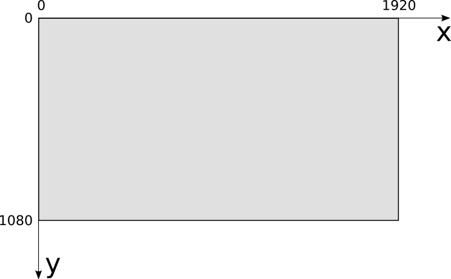
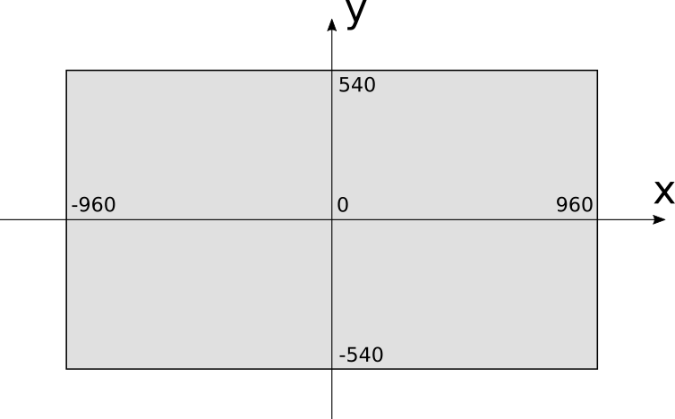
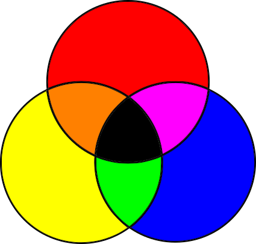
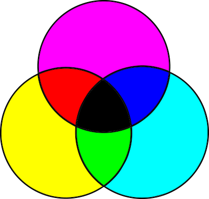
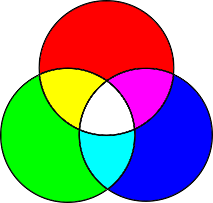
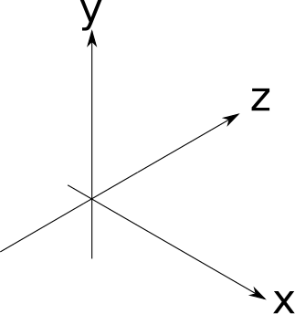

Introductory Concepts
A raytracer and a rasterizer take very different approaches to rendering a 3D scene onto a 2D screen. However, there are a few fundamental concepts that are common to both approaches.
In this chapter, we’ll explore the canvas, the abstract surface on which we’ll render our images; the coordinate system we’ll use to refer to pixels on the canvas; how to represent and manipulate colors; and how to describe a 3D scene so our renderers can work with it.
The Canvas
Throughout this book, we’ll be drawing things on a canvas: a rectangular array of pixels that can be individually colored. Whether this canvas is shown on a screen or printed on paper is irrelevant to our purposes. Our goal is to represent a 3D scene on a 2D canvas, so we’ll focus on rendering to this abstract, rectangular array of pixels.
We’ll build everything in this book out of a single, very simple function, which assigns a color to a pixel on the canvas:
canvas.PutPixel(x, y, color)
This method has three arguments: an x coordinate, a y coordinate, and a color. Let’s focus on the coordinates for now.
Coordinate Systems
The canvas has a width and a height, measured in pixels, which we’ll call \(C_w\) and \(C_h\). We need a coordinate system to refer to its pixels. For most computer screens, the origin is at the top left; \(x\) increases toward the right of the screen, and \(y\) increases toward the bottom, as in Figure 1-1.

This coordinate system is very natural for a computer because of the way video memory is organized, but it’s not the most natural for humans to work with. Instead, 3D graphics programmers tend to use the coordinate system typically used to draw graphs on paper: the origin is at the center, \(x\) increases toward the right and decreases toward the left, while \(y\) increases toward the top and decreases toward the bottom, as in Figure 1-2.

Using this coordinate system, the range of the \(x\) coordinate is \([{-C_w \over 2}, {C_w \over 2})\) and the range of the \(y\) coordinate is \([{-C_h \over 2}, {C_h \over 2})\). Let’s assume that using the PutPixel function with coordinates outside these ranges does nothing.
In our examples, the canvas will be drawn on the screen, so we’ll need to convert from one coordinate system to the other. To do this, we need to change the center of the coordinate system and reverse the direction of the \(Y\) axis. The resulting conversion equations are:
\[S_x = {C_w \over 2} + C_x\]
\[S_y = {C_h \over 2} - C_y\]
We will assume PutPixel does this conversion automatically; from this point on, we can think of the canvas as having its coordinate origin at the center, with \(x\) increasing to the right and \(y\) increasing to the top of the screen.
Let’s take a look at the remaining argument of PutPixel: the color.
Color Models
The theory of how color works is fascinating, but it’s outside the scope of this book. The following is a simplified version of the aspects relevant to us.
When light hits our eyes, it stimulates the light-sensitive cells at their back. These generate signals on our brains, that depend on the wavelength of the incoming light. We call the subjective experience of these brain signals colors.
We can only see light in a certain range of wavelengths, called the visible range. Wavelength and frequency are inversely related: the more frequently the wave hits, the smaller the distance between the peaks of that wave, and the more energy is carried by the wave. This is why infrared (wavelengths longer than 740 nm, corresponding to frequencies lower than 405 terahertz [THz]) is harmless, but ultraviolet (wavelengths shorter than 380 nm, corresponding to frequencies higher than 790 THz) can burn your skin.
Every color imaginable can be described as a combination of different wavelengths. For example, “White” is the sum of all wavelengths, while “black” is the absence of any light. It would be impractical to describe colors by listing all the wavelengths they’re made of; fortunately, it’s possible to describe almost all colors as a linear combination of just three colors, which we call primary colors.
Subtractive Color Model
The subtractive color model is a fancy name for that thing you did with crayons as a toddler. You take a white piece of paper and red, blue, and yellow crayons. You draw a yellow circle, then a blue circle that overlaps it, and you get green! Yellow and red—orange! Red and blue—purple! Mix the three together—something darkish! Wasn’t kindergarten amazing? Figure 1-3 shows the primary colors of the subtractive model, and the colors that result from mixing them.

Objects are of different colors because they absorb and reflect light in different ways. Let’s start with white light, like sunlight (sunlight isn’t quite white, but it’s close enough for our purposes). White light contains light of every wavelength. When it hits an object, the object’s surface absorbs some of the wavelengths and reflects others, depending on the material. Some of the reflected light then hits our eyes, and our brains convert that to color. What color? The sum of the wavelengths that were reflected by the surface.
So what’s going on with the crayons? You start with white light reflecting off the paper. Since it’s white paper, it reflects most of the light it receives. When you draw with a “yellow” crayon, you’re adding a layer of a material that absorbs some wavelengths but lets others pass through it. They’re reflected by the paper, pass through the yellow layer again, hit your eyes, and your brain interprets that particular combination of wavelengths as “yellow.” What the yellow layer does is subtract a bunch of wavelengths from the original white light.
You can think of each colored circle as a filter: when you draw a blue circle overlapping the yellow one, you’re filtering out even more wavelengths from the original light, so what hits your eyes is whatever wavelengths weren’t filtered by either the blue or the yellow circles, which your brain sees as “green.”
In summary, we start with all wavelengths and subtract some amount of the primary colors to create any other color. This color model gets its name from the fact that we’re creating colors by subtracting wavelengths.
This model isn’t quite right, though. The actual primary colors in the subtractive model aren’t the blue, red, and yellow taught to toddlers and art students, but cyan, magenta, and yellow. Furthermore, mixing the three primary colors produces a somewhat darkish color that isn’t quite black, so pure black is added as a fourth “primary.” Because B is used to represent blue, black is denoted by K, and so we arrive at the CMYK color model (Figure 1-4).
You can see evidence of this color model directly on the cartridges of color printers, or sometimes in the shapes of cheaply printed flyers where the different colors are slightly offset from one another.

Additive Color Model
The subtractive color model is only half the story. If you’ve ever looked at a screen up close or with a magnifying glass (or, let’s be honest, accidentally sneezed on it), you’ve probably seen tiny colored dots: these are red, green, and blue.
Computer screens are the opposite of paper. Paper doesn’t emit light; it merely reflects part of the light that hits it. Screens, on the other hand, are black, but they do emit light on their own. With paper, we start with white light and subtract the wavelengths we don’t want; with a screen, we start with no light and add the wavelengths we want.
Different primary colors are necessary for this. Most colors can be created by adding different amounts of red, green, and blue to a black surface; this is the RGB color model, an additive color model, shown in Figure 1-5.
The combination of additive primary colors is lighter than its components, whereas the combination of subtractive primary colors is darker; all the additive primaries add up to white, while all the subtractive primaries add up to black.

Forget the Details
Now that you know all this, you can selectively forget most of the details and focus on what’s important for our work.
Most colors can be represented in either RGB or CMYK (or in any of the many other color models), and it’s possible to convert from one color space to another. Since we’re focusing on rendering things on a screen, we use the RGB color model for the rest of this book.
As described above, objects absorb part of the light reaching them and reflect the rest. Which wavelengths are absorbed and which are reflected is what we perceive as the “color” of the surface. From now on, we’ll simply treat the color as a property of a surface and forget about light wavelengths.
Color Depth and Representation
Monitors create colors by mixing different amounts of red, green, and blue. They do this by lighting the tiny colored dots on their surface at different intensities by supplying different voltages to them.
How many different intensities can we get? Although voltage is continuous, we’ll be manipulating colors with a computer, which uses discrete values (that is, a limited number of them). The more shades of red, green, and blue we can represent, the more colors we’ll be able to produce.
Most images you see these days use 8 bits per primary color, which we call a color channel in this context. Using 8 bits per channel gives us 24 bits per pixel, for a total of \(2^{24}\) different colors (approximately 16.7 million). This format, known as R8G8B8 or simply 888, is the one we’ll use throughout this book. We say this format has a color depth of 24 bits.
This is by no means the only possible format. Not so long ago, in order to save memory, 15- and 16-bit formats were popular, assigning 5 bits per channel in the 15-bit case, and 5 bits for red, 6 for green, and 5 for blue in the 16-bit case (known as the R5G6B5 or 565 format). Green gets the extra bit because our eyes are more sensitive to changes in green than to changes in red or blue.
With 16 bits, we get \(2^{16}\) colors (approximately 65,000). This means you get one color for every 256 colors in 24-bit mode. Although 65,000 colors is plenty, for images where colors change very gradually you would be able to see very subtle “steps” that just aren’t visible with 16.7 million colors, where there are enough bits to represent the colors in between. For some specialized applications, such as color grading for movies, it’s a good idea to represent even more color detail, using even more bits per channel.
We’ll use 3 bytes to represent a color, each holding the value of an 8-bit color channel, from 0 to 255. We’ll express the colors as \((R, G, B)\)—for example, \((255, 0, 0)\) represents pure red; \((255, 255, 255)\) represents white; and \((255, 0, 128)\) represents a reddish purple.
Color Manipulation
We’ll use a handful of operations to manipulate colors. If you know some linear algebra, you can think of colors as vectors in 3D color space. If not, don’t worry, we’ll go through the basic operations we’ll be using now.
We can modify the intensity of a color by multiplying each of its color channels by a constant:
\[k(R, G, B) = (kR, kG, kB)\]
For example, \((32, 0, 128)\) is twice as bright as \((16, 0, 64)\).
We can add two colors together by adding their color channels separately:
\[(R_1, G_1, B_1) + (R_2, G_2, B_2) = (R_1 + R_2, G_1 + G_2, B_1 + B_2)\]
For example, if we want to combine red \((255, 0, 0)\) and green \((0, 255, 0)\), we add them channel-wise and get \((255, 255, 0)\), which is yellow.
These operations can yield invalid values; for example, doubling the intensity of \((192, 64, 32)\) produces an \(R\) value outside our color range. We’ll treat any value over 255 as 255, and any value below 0 as 0; we call this clamping the value to the [0–255] range. This is more or less equivalent to what happens when you take an under- or over-exposed photograph in real life: you get either completely black or completely white areas.
That about sums it up for our primer on colors and PutPixel. Before we move on to the next chapter, let’s spend a little time exploring how to represent the 3D objects we’ll be rendering.
The Scene
So far, we have introduced the canvas, the abstract surface on which we can color pixels. Now we turn our attention to the objects we’re interested in representing by introducing another abstraction: the scene.
The scene is the set of objects you may be interested in rendering. It could represent anything, from a single sphere floating in the empty infinity of space (we’ll start there) to an incredibly detailed model of the inside of a grumpy ogre’s nose.
We need a coordinate system to talk about objects within the scene. We can’t use the same coordinate system as the canvas, for two reasons. First, the canvas is 2D, whereas the scene is 3D. Second, the canvas and the scene use different units: we use pixels for the canvas and real-world units (such as the imperial or metric systems) for the scene.
The choice of axes is arbitrary, so we’ll pick something useful for our purposes. We’ll say that \(Y\) is up and \(X\) and \(Z\) are horizontal, and all three axes are perpendicular to each other. Think of the plane \(XZ\) as the “floor,” while \(XY\) and \(YZ\) are vertical “walls” in a square room. This is consistent with the coordinate system we chose for the canvas, where \(Y\) is up and \(X\) is horizontal. Figure 1-6 shows what this looks like.

The choice of scene units is somewhat arbitrary; it depends on what your scene represents. A measurement of “1” could mean 1 inch if you’re modeling a teacup, or it could mean 1 astronomical unit if you’re modeling the Solar System. As long as we use our chosen units consistently, it doesn’t matter what they are, so we can safely ignore them from now on.
Summary
In this chapter, we’ve introduced the canvas, an abstraction that represents a rectangular surface we can draw on, plus the one method we’ll build everything else on: PutPixel. We’ve also chosen a coordinate system to refer to the pixels on the canvas and described a way to represent the color of these pixels. Lastly, we introduced the concept of a scene and chose a coordinate system to use in the scene.
Having laid these foundations, it’s time to start building a raytracer and a rasterizer on top of them.